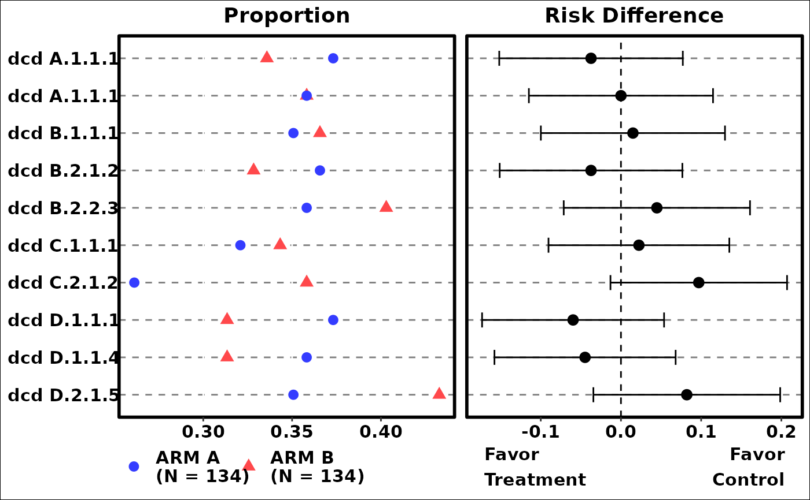
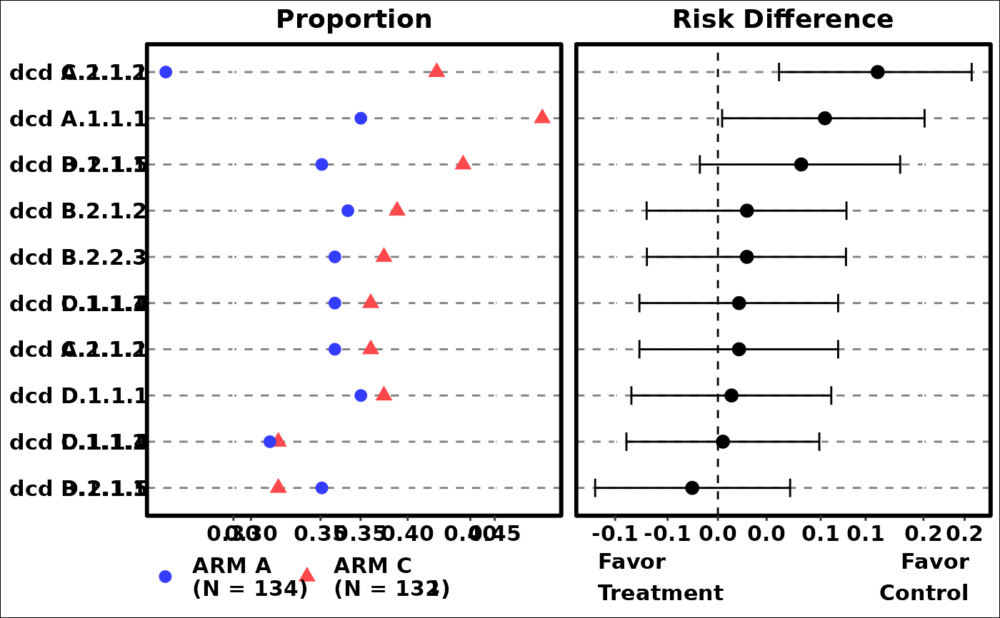

This function plots commonly occurred events by number of unique subjects with events. It creates basic summary of events and compares event occurrences between comparison and reference arms, and can be used for events data such as Adverse Events.
Usage
g_events_term_id(
term,
id,
arm,
arm_N,
ref = levels(arm)[1],
trt = levels(arm)[2],
sort_by = c("term", "riskdiff", "meanrisk"),
rate_range = c(0, 1),
diff_range = c(-1, 1),
reversed = FALSE,
conf_level = 0.95,
diff_ci_method = c("wald", "waldcc", "ac", "score", "scorecc", "mn", "mee", "blj",
"ha", "beal"),
axis_side = c("left", "right"),
color = c(getOption("ggplot2.discrete.colour"), "blue", "red")[1:2],
shape = c(16, 17),
fontsize = 4,
draw = TRUE
)Arguments
- term
characterorfactorvector, ordata.frame
Represents events information.termcan be adata.frameproduced bycreate_flag_vars, with each column being alogicalevent indicator- id
(
vector)
contains subject identifier. Length ofidmust be the same as the length or number of rows ofterms. Usually it isADAE$USUBJID.- arm
(
factor)
vector that contains arm information in analysis data. For example,ADAE$ACTARMCD.- arm_N
(
numericvector)
Contains information of the number of patients in the levels ofarm. This is useful if there are patients that have no adverse events can be accounted for with this argument.- ref
characterindicates the name of the reference arm. Default is the first level ofarm.- trt
characterindicates the name of the treatment arm. Default is the second level ofarm.- sort_by
characterindicates how eachtermis sorted in the plot. Choose from"term"for alphabetic terms,"riskdiff"for risk difference, and"meanrisk"for mean risk. Default is "term".- rate_range
Numeric
vectorof length 2. Range for overall rate display- diff_range
Numeric
vectorof length 2. Range for rate difference display- reversed
logicalwhether to reverse the sorting bysort_by. Default is FALSE.- conf_level
(
numeric)
the confidence interval level, default is 0.95.- diff_ci_method
(
character)
the method used to calculate confidence interval. Default is"wald". Possible choices are methods supported inBinomDiffCI.- axis_side
characterthe side of the axis label, "left" or "right". Default is "left".- color
Color for the plot.
vectorof length 2. Color for reference and treatment arms respectively. Default set toc("blue", "red").- shape
Shape for the plot.
vectorof length 2. Shape for reference and treatment arms respectively. Default set toc(16, 17)perscale_shape.- fontsize
(
numeric)
font size for the plot. It is the size used inggplot2with default unit "mm", if you want "points" you will need to divide the point number byggplot2:::.pt.- draw
(
logical)
whether to draw the plot.
Examples
library(dplyr)
library(grid)
library(nestcolor)
ADSL <- osprey::rADSL
ADAE <- osprey::rADAE
# add additional dummy causality flags
ADAE <- ADAE %>%
mutate(AEREL1 = (AEREL == "Y" & ACTARM == "A: Drug X")) %>%
mutate(AEREL2 = (AEREL == "Y" & ACTARM == "B: Placebo"))
attr(ADAE[["AEREL1"]], "label") <- "AE related to A: Drug X"
attr(ADAE[["AEREL2"]], "label") <- "AE related to B: Placebo"
term <- ADAE$AEDECOD
id <- ADAE$USUBJID
arm <- ADAE$ACTARMCD
arm_N <- table(ADSL$ACTARMCD)
ref <- "ARM A"
trt <- "ARM C"
# Example 1
p1 <- g_events_term_id(
term,
id,
arm,
arm_N
)

grid::grid.newpage()
grid::grid.draw(p1)
# Example 2
p2 <- g_events_term_id(
term,
id,
arm,
arm_N,
trt = trt,
ref = ref,
sort_by = "riskdiff",
diff_ci_method = "ac",
conf_level = 0.9
)

grid::grid.newpage()
grid::grid.draw(p2)
# Example 3
p3 <- g_events_term_id(
term,
id,
arm,
arm_N,
sort_by = "meanrisk",
axis_side = "right",
fontsize = 5
)
 grid::grid.newpage()
grid::grid.draw(p3)
# Example 4
term <- create_flag_vars(ADAE)
g_events_term_id(
term,
id,
arm,
arm_N,
fontsize = 3
)
grid::grid.newpage()
grid::grid.draw(p3)
# Example 4
term <- create_flag_vars(ADAE)
g_events_term_id(
term,
id,
arm,
arm_N,
fontsize = 3
)